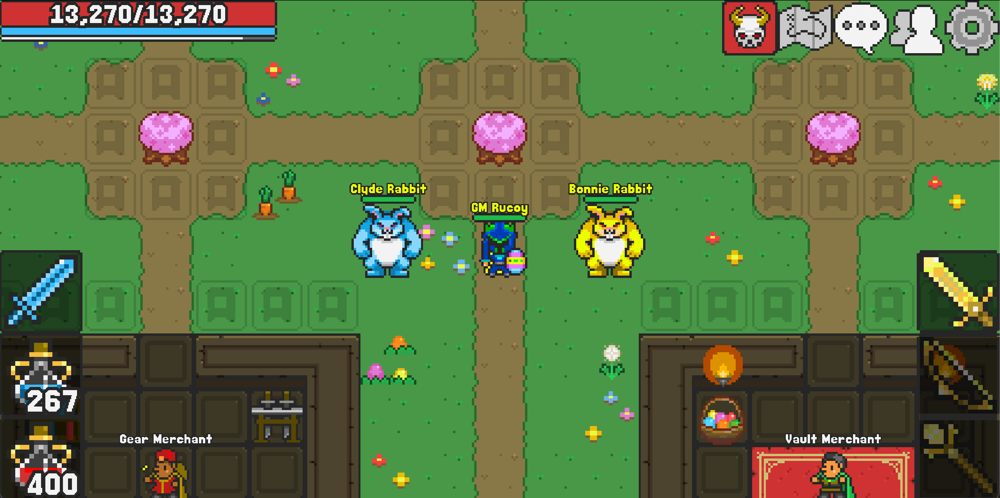
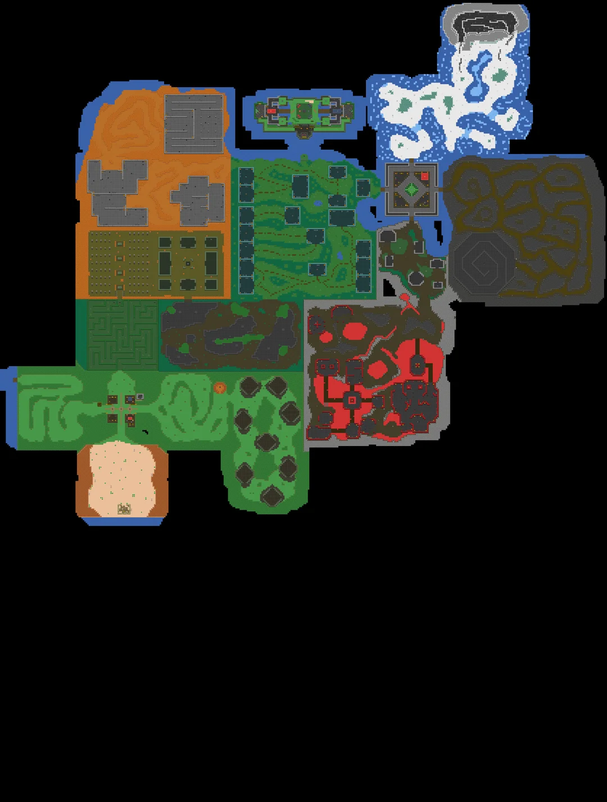

Nesta página, vou fazer uma pequena análise do jogo Rucoy Online, falando sobre a progressão, os pontos positivos e os pontos negativos.


Rucoy Online é um jogo 2D com foco em evolução de personagem, combate contra monstros, coleta de itens e progressão de level.
O jogo tem uma ideia simples, mas pode prender bastante o jogador, principalmente por causa da sensação de ficar mais forte com o tempo. Mesmo com gráficos simples, ele consegue entregar uma experiência divertida.
Um dos pontos positivos é a progressão. O jogador sente que está evoluindo aos poucos, melhorando seus atributos e conseguindo enfrentar inimigos mais fortes.
Outro ponto interessante é que o jogo possui um estilo direto, sem muitas complicações para começar a jogar.
Um ponto negativo é que o visual do jogo poderia ser mais bonito e mais moderno. Além disso, algumas partes podem ficar repetitivas depois de muito tempo jogando.
Também seria interessante se os equipamentos aparecessem melhor no personagem, deixando a evolução visual mais clara.
Rucoy Online é simples, mas mostra como um bom sistema de progressão pode deixar um jogo viciante
Na minha opinião, o jogo é legal para quem gosta de RPG com evolução constante, drop de itens e combate simples.
Você pode acessar o site do jogo clicando no link abaixo:
Acessar site do Rucoy OnlinePágina criada para praticar HTML básico usando títulos, parágrafos, imagens locais, imagens externas, links, quebras de linha, linhas horizontais e citações.